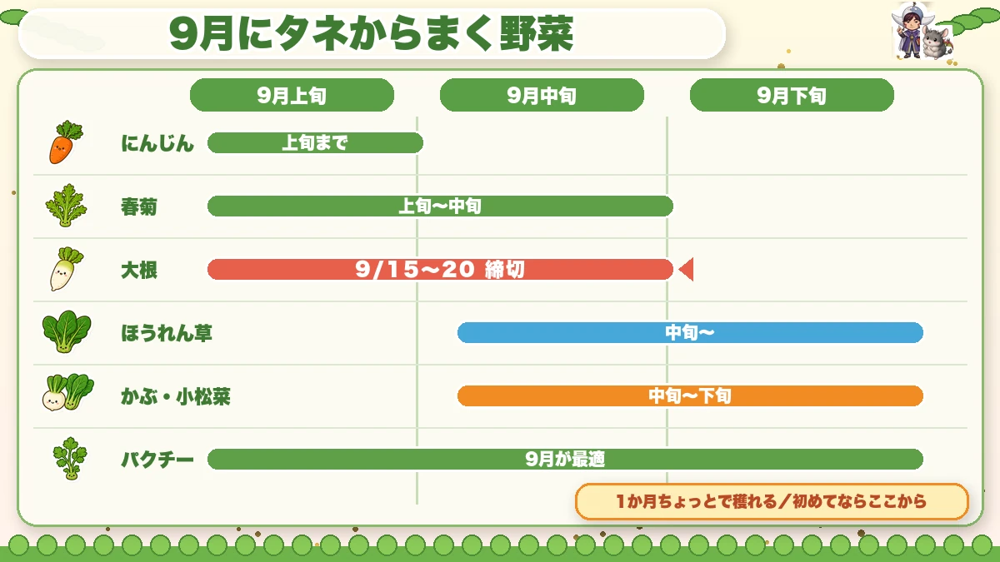
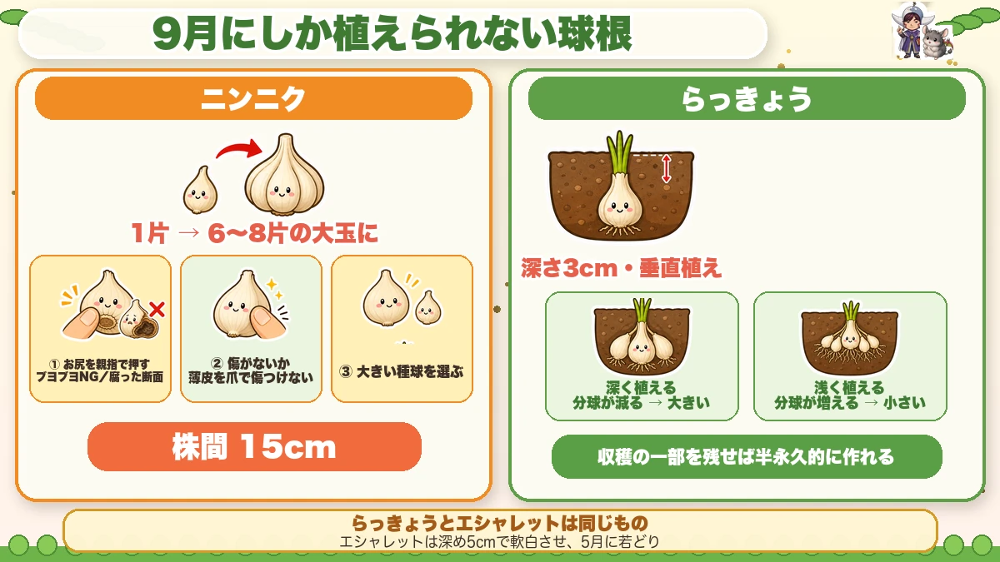
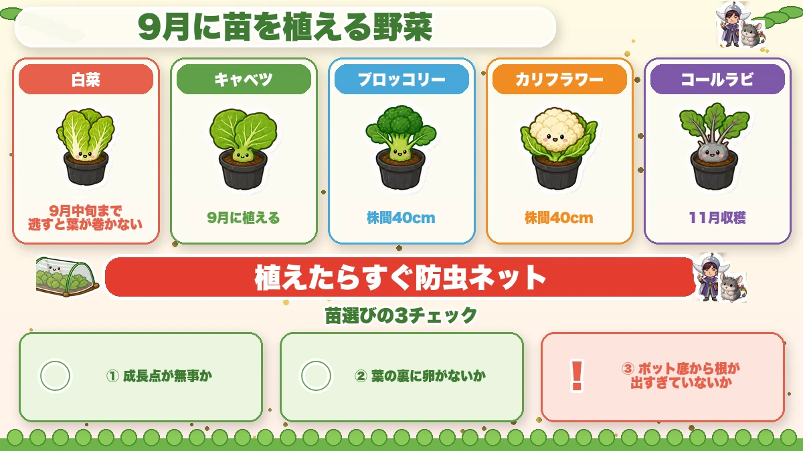
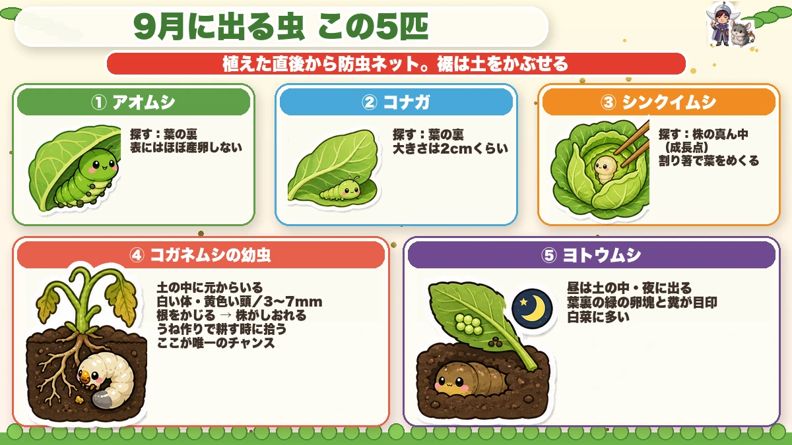

【9月にまく・植える野菜】あと1週間の遅れが、冬の食卓を変えます🌱

🗨️「まだ暑いし、もう少し待とうかな…」
🗨️「9月って、結局なにを植えたらいいの？」
🗨️「去年ニンニクを植えたのに、半分も芽が出なかった」
どうも、8150（えいこう）です🌱 家庭菜園歴8年、理科の教員免許を持っていて、有機・無農薬で野菜を育てています。
毎月お届けしている「今月なにをまく・植えるか」の定期便、9月号です。前回の8月号もあわせてどうぞ。
先に、この記事でいちばん言いたいことを言っておきますね。
9月は「まだ暑いし、もう少し待とう」がいちばん危ない月です。
というのも、野菜は気温が10℃を下回ると成長を止めてしまうから。つまり秋冬野菜は、寒くなるまでの限られた日数で「どこまで大きくなれるか」を競っているんです。
春なら1週間遅れても取り返せます。でも秋は取り返せません。1週間の遅れが、そのまま収穫の遅れになる。ひどいときは収穫できないまま冬になります。
なので今月は、少し前のめりでいきましょう。大丈夫、この記事のとおりに動けば間に合います☺️
※以下の時期は中間地（関東〜関西の平野部）が目安。寒い地域は少し遅らせ、暖かい地域は早めに。種の袋にまく時期が書いてあるので、そこもチェック✨️
📖 この記事の目次
今月の畑は、こんな状態
まだ暑いです。でも確実に、日が短くなってきています。
やっかいなのが、涼しくなってきた頃に虫がどっと増えること。8月より9月のほうが虫は多いです。まいた種が無事に芽を出しても、そこから食べられて消えることが普通にあります。
だから9月は、まく・植えると同時に守る月です。この記事でも、後半に「9月に出る虫5匹」をまとめました。
迷ったら「早めにまく」が正解
私が毎年やっているのは、適期の少し前にまくことです。
理由は単純で、失敗してもまき直せるから。9月上旬にまいて全滅しても、中旬にもう一度まけます。でも下旬にまいて失敗したら、その野菜は今年おしまいです。
「早めにまいて、ダメだったらもう一回」。これが秋のいちばん賢い進め方だと思っています。
9月にタネからまく野菜

大根（9月中旬まで）
9月15〜20日までにまき終える。これが鉄則です。
品種に迷ったら「耐病総太り」。まず失敗しません。1か所5粒（3粒でもOK）、株間20〜30cm、深さは人差し指の第2関節より少し深め。大根は光を嫌うタネなので、浅いと芽が揃いません。
収穫は12月ごろ。冬の畑から大根を引き抜くときの手ごたえ、あれはちょっとクセになりますよ。
ほうれん草（9月中旬〜）※この記事の要注意ポイント
ほうれん草は「発芽しない」で悩む人がいちばん多い野菜です。でも原因はだいたい1つに絞れます。
土が酸性に寄っていることです。
ほうれん草は西洋から来た野菜で、pH6.5〜7という、ちょっとアルカリ寄りの土を好みます（pHは土の酸性・アルカリ性を表す数字。7が真ん中で、小さいほど酸性です）。ところが日本の土は雨が多いぶん酸性に傾きやすい。ここがズレていると、どれだけ丁寧にまいても芽が出ません。
なので、ほうれん草だけは石灰を入れてください。ほかの野菜で「石灰は控えめに」と書いてきましたが、ここは例外です。
- 種まきの1か月前に、1平方メートルあたり 牛ふん2L・有機肥料200cc・石灰200cc をよく混ぜておく
まき方にもコツがあります。私はこうしています。
- 15cm間隔の穴あきマルチを張って、1つの穴に4粒（サイコロの4の目の配置で）
- ★割り箸の先から1cmのところに線を引いて、そこまで押し込む
この割り箸、地味ですがめちゃくちゃ効きます。指で押し込むと、種が指にくっついて一緒に上がってきてしまうんですよね。深さもバラバラになる。割り箸1本で、全部の種が同じ深さに揃います。
まいたあとは、手のひらでぐるぐるっと土を寄せて、最後にぎゅっと押さえる。水は1回でOK。そのあと不織布をかけて、周りに土を乗せて飛ばないようにしておきます。
そしてもうひとつ、収穫のときの裏ワザを。
収穫の1週間前に、寒い空気に当ててください。
ほうれん草は寒さに当たると、身を守るために養分を糖分に変える性質があります。これで驚くほど甘くなります。ただし当てすぎると枯れるので、1週間以内で。
かぶ・小松菜（9月中〜下旬）
初めて秋冬野菜をやる方に、いちばんおすすめしたいのがここです。
9月にまけば、1か月ちょっとで穫れます。虫よけさえちゃんとすれば、まず失敗しません。しかも穫れたてのかぶや小松菜は、スーパーのものと本当に別物です。
「秋冬野菜って難しそう」と思っている方は、まずこれを1うね作ってみてください。1か月で結果が出るので、いちばん楽しいと思います☺️
春菊（9月上旬〜中旬）
発芽適温は15〜20℃。35℃を超えると発芽率がガタ落ちするので、暑い年は9月に入ってからで十分です。
春菊はもともと発芽率が5割くらい（ほかの野菜は7〜8割）。ケチらず厚めにまくのがコツです。光が当たらないと芽が出ないタネなので、覆土（上にかける土）はごく薄く。そのぶん乾きやすいので、しっかり鎮圧して（上から手で押さえて）土と密着させてください。
パクチー（9月がベスト）
好き嫌いは分かれますが、作ると面白い野菜です。
パクチーは年中まけるんですが、9月が一番いいです。10月ごろから葉を摘み取れて、そのまま冬を越して、春に急に大きくなります。そこでどっさり穫れる。さらに花が咲いて、種も採れます。この種、香辛料のコリアンダーそのものなんですよね。もちろん翌年のタネにも使えます。
ひとつコツがあって、パクチーは集団で育つと機嫌がいい野菜です。ぱらぱら離してまくより、まとめてまくほうがよく育ちます。
にんじん（9月上旬まで）
にんじんは発芽が9割です。タネは光が要るので浅く（2cmまで）、まいたあとは上からしっかり押さえる。発芽まで2週間かかるので、その間乾かさないことが命です。
上旬を過ぎたら、来年の春まきに回しましょう。無理に追いかけなくて大丈夫です。
9月にしか植えられない「球根」の野菜

ここが9月の特別なところです。ニンニクとらっきょうは、この時期を逃すと1年待ちになります。
ニンニク（9月植え → 翌年5〜6月収穫）
栽培期間はとても長いですが、手はほとんどかかりません。植えたらあとは放っておくだけで、1片が6〜8片の大玉に育ちます。株間15cmで植えていけばOKです。
そして今日いちばん伝えたいのがここ。
「ニンニクの芽が出ない」の正体は、たいてい種球です。
私も一昨年やらかしました。9月に植えたニンニクの3割ほどが、いつまで待っても芽を出さなかったんです。掘り返してみたら、下の部分がどろっと腐っていました。植える前にちゃんと見ていれば防げた失敗です😇
それ以来、私は買うときと植える前に、この3つを必ず見ています。
- お尻を親指で押す…根が出る側です。ブヨブヨしていたらアウト。中が腐っています
- 傷がないか…傷口から細菌が入ります。とくに薄皮をむくとき、爪で傷つけやすいので慎重に
- 大きい種球を選ぶ…1片に蓄えられた養分が多いほど、力強く出てきます
もうひとつ、買うタイミングの話も。売り出しの後半に残っている種球は、傷んでいるものが多いです。ニンニクは早めに買っておくのが正解です。
薄皮がむきにくいときは、バラしたあと水に30分つけてみてください。するっとむけます。
ちなみに「ジャンボにんにく」という大きいのが売っていますが、あれはニンニクではなくネギの仲間です。別物なので、味を期待して植えると「あれ？」となります。
らっきょう（9月中旬〜下旬）
これ、私が家庭菜園でいちばん気に入っている野菜かもしれません。理由は3つあります。
まず、めちゃくちゃ丈夫です。植え時期もそこまで厳密じゃなく、9月中に植えれば大体うまくいきます。ほったらかしでも育ちます。
次に、種を買わなくてよくなること。収穫したものの一部を残して、ネットに入れて風通しよく保存しておけば、翌年の種球になります。つまり一度始めれば、半永久的に作り続けられるんです。
そして3つ目。収穫は翌年の6〜7月なので、春に畑を占領します。でも畑の隅に植えておけば、トマトやナスの邪魔になりません。
植え方はシンプルです。
- 種球を1個ずつバラして、垂直に置く
- 上から3cmくらい土がかかる深さに
- マルチなしなら、うね幅40〜60cm・株間10〜15cm
面白いのが、植える深さで仕上がりが変わることです。
深く植えると分球（1個が複数に分かれること）が減って、大きならっきょうになります。浅く植えると分球が増えて、小さいのがたくさん穫れます。どっちがいいかは好みですね。私は漬けるのが目的なので、やや深めにしています。
ついでにもうひとつ。らっきょうとエシャレット、じつは同じものです。
違うのは育て方と収穫時期だけ。エシャレットは深め（上から5cmくらい）に植えて、土をかけながら白い部分を伸ばし、5月に若どりしたものです。同じ種球から作り分けられるので、余裕があれば両方やってみると楽しいですよ。
なお、芽が長く伸びている種球は、切ってから植えて大丈夫です。また新しい芽が出てきます。根も切っても切らなくてもかまいません。
ホーム玉ねぎ（9月上旬まで・駆け込み）
先月おすすめしたホーム玉ねぎ、まだギリギリ間に合います。
小さな球根を植えるだけで11月には玉ねぎになる、という手軽なやつです。ただし植え時を逃すと冬までに太らず、春にとう立ち（花が咲いて硬くなること）してしまいます。9月上旬までに植えられないなら、今年は見送って来年に回すほうが賢いです。
9月に苗を植える野菜

白菜（9月中旬まで）
9月中旬を逃すと、結球しない（葉が丸く巻かない）まま冬になります。大玉ほどシビアです。
苗を買うときに見るのはこの3つ。成長点（中心の芽）が無事か、葉の裏に卵がついていないか、ポットの底から根が出まくっていないか。とくに卵つきの苗にネットをかけると、天敵のいない虫の楽園を作ることになるので気をつけてください。
植えるときは、深植えしない。植え穴に水を満杯に入れて、引いてから植える。そして植えたらすぐネットをかける。白菜は数時間の直射日光でも弱ります。
キャベツ・ブロッコリー・カリフラワー
株間40cmで。苗は軸が太いものを選んでください。細いと倒れます。
正直に言うと、無農薬なら10月植えのほうがラクです。9月はまだ虫の勢いが強いので、そのぶん削られます。ネットは必須だと思ってください。
コールラビ（9月植え → 11月収穫）
聞き慣れないかもしれませんが、キャベツの親戚です。ドイツ語で「キャベツ」＋「かぶ」。名前のとおり、結球せずに茎がまるく太って、そこを食べます。
これがですね、見た目がめちゃくちゃかわいいんですよ。宇宙人みたいな形で畑に並びます。しかも成長が早くて虫にも遭いにくいので、キャベツよりずっと作りやすい。
スライスしてサラダでも、煮ても炒めてもいけます。知らない野菜を作ってみるのって、家庭菜園のいちばん楽しいところだと思うんですよね。1株だけでも、ぜひ☺️
9月に出る虫、この5匹を覚えてください

秋冬野菜がやられるかどうかは、ここで決まります。まず大前提として、植えた直後から防虫ネットをかけてください。裾はパッカーで留めて、さらに周りに土をかぶせる。これで大半は防げます。
そのうえで、入り込んだやつを見つける話をします。虫対策そのものは無農薬の虫対策大全にまとめてあります。
①アオムシ ②コナガ ー 葉の「裏」だけ見る
どちらもモンシロチョウの仲間で、コナガは2cmくらいまで育ちます。
覚えてほしいのは1つだけ。葉の表にはほぼ産卵しません。裏です。
だから探すときは、葉っぱを1枚ずつめくって裏を見る。卵は目で見える大きさなので、見つけたら取ってしまえば終わりです。表側だけ眺めて「いないな」と判断するのが、いちばんもったいないパターンです。
③シンクイムシ ー 株の「真ん中」に潜る
葉ではなく、株のど真ん中、これから新しい葉が出てくる成長点に入り込みます。ここをやられると成長が止まり、最悪は植え直しです。
探すときは、割り箸を使ってください。指だと奥まで開けないんですが、割り箸で葉を1枚ずつめくっていくと、中まで見えます。
それと大事なのが、苗を買うとき。売り場の時点でシンクイムシやアオムシがついていることがあります。ここは遠慮せず、じっくり点検してから買ってください。
④コガネムシの幼虫 ー 土の中に、もういる
これ、知らない人が多いと思います。
さっきまでの虫は「外から飛んでくる」ものでしたが、こいつは違います。すでに土の中にいます。
見た目は、体が白くて頭が黄色い幼虫。大きさは3〜7mmくらい。こいつは葉っぱには目もくれず、根をかじります。
やられると、キャベツや白菜、ブロッコリーが、まるで病気みたいにしおれてきます。「原因が分からないけど元気がない」の正体が、これだったりするんです。
そして厄介なのが、植えたあとでは手の打ちようがほとんどないこと。
だから対策は1つ。うねを作るときに、耕しながら見つけて取ることです。土をひっくり返していると、白いのがコロッと出てきます。地味な作業ですが、ここが唯一のチャンスです。
植えたあとに株の元気がなくなったら、株のまわりを移植ゴテで軽く掘ってみてください。だいたい犯人がいます。
⑤ヨトウムシ ー 昼はいない
白菜に多い虫です。名前のとおり夜に活動して、昼間は土の中に隠れています。だから昼に探しても見つかりません。
代わりに探すのは、この2つです。
- 葉の裏の、緑色の卵のかたまり
- 葉の上に落ちている糞
糞を見つけたら、その近くに必ずいます。放っておくと白菜が1個まるごと虫食いになるので、見つけ次第です。本格的に出るのは10〜11月、白菜が巻き始めた頃なので、そこは覚えておいてください。
学ぶ：なぜ「あと1週間」が命取りなのか🔬
理科の時間です。ここが分かると、日付にこだわる意味がストンと落ちます。
野菜は、気温が10℃を下回るとほとんど成長しなくなります。細胞の中で起きている化学反応が、寒いとゆっくりになってしまうからです。冷蔵庫に野菜を入れると長持ちするのと、まったく同じ理屈ですね。
ということは、秋冬野菜にとっての1年はこうなります。
種をまく → 気温が10℃を下回るまでに、できるだけ大きくなる → あとは寒さの中でじっと待つ
つまり9月にまくというのは、「10℃になるまでの残り時間」をどれだけ確保できるかという話なんです。1週間遅れれば、成長できる時間が1週間まるごと減る。取り返す方法はありません。
春との違いも、ここにあります。春は日に日に暖かくなるので、遅れても後半で巻き返せる。でも秋は日に日に寒くなるので、遅れは一方通行なんですよね。
お子さんと一緒なら、畑に温度計を置いて、毎週同じ曜日に気温を記録してみてください。10月・11月と数字が下がっていくのが目に見えます。そして「10℃を切った日」に印をつける。その日から野菜が大きくならなくなるのを、実際に観察できます。これ、立派な理科の研究になりますよ☺️
まとめ
ここまで読んでくださって、ありがとうございます！
9月は迷っている時間がいちばんもったいない月です。ポイントを整理しておきますね。
- 野菜は10℃を下回ると成長を止める。秋の遅れは取り返せないので、迷ったら早めにまく
- 大根は9月15〜20日まで。白菜の苗は9月中旬まで
- ほうれん草だけは石灰を入れる（pH6.5〜7）。タネは割り箸で深さ1cmに揃える
- ニンニク・らっきょうは9月にしか植えられない。ニンニクは種球のお尻・傷・大きさを必ず確認
- 虫は5匹だけ覚える。アオムシとコナガは葉の裏、シンクイムシは芯、ヨトウムシは糞が目印、コガネムシの幼虫はうね作りのときに捕る
全部やろうとしなくて大丈夫です。まずは今週末、かぶか小松菜を1うねまいてみてください。1か月後には食べられます。そこから始めるのが、いちばん続きますよ🌱
次回は、秋冬野菜の大物「白菜」を無農薬で結球させる話をします。虫との戦いと、「葉が巻くしくみ」まで踏み込みます🥬
ニンニクの種球
ニンニクは早めに買うのが正解です。売り出しの後半に残っているものは傷んでいることが多いので。お尻がブヨブヨしていないか、傷がないかを確かめてから植えてください。
![[商品価格に関しましては、リンクが作成された時点と現時点で情報が変更されている場合がございます。]](https://hbb.afl.rakuten.co.jp/hgb/565b74ce.f30a48e7.565b74cf.8a827250/?me_id=1368676&item_id=10000301&pc=https%3A%2F%2Fthumbnail.image.rakuten.co.jp%2F%400_mall%2Farakawaseed%2Fcabinet%2Fcompass1659994587.jpg%3F_ex%3D240x240&s=240x240&t=picttext "[商品価格に関しましては、リンクが作成された時点と現時点で情報が変更されている場合がございます。]")

らっきょうの種球
一度植えれば、収穫の一部を残すだけで翌年の種球になります。半永久的に作り続けられるのが、らっきょうのいちばん好きなところです。
![[商品価格に関しましては、リンクが作成された時点と現時点で情報が変更されている場合がございます。]](https://hbb.afl.rakuten.co.jp/hgb/565b74ce.f30a48e7.565b74cf.8a827250/?me_id=1368676&item_id=10000258&pc=https%3A%2F%2Fthumbnail.image.rakuten.co.jp%2F%400_mall%2Farakawaseed%2Fcabinet%2Fcompass1628674080.jpg%3F_ex%3D240x240&s=240x240&t=picttext "[商品価格に関しましては、リンクが作成された時点と現時点で情報が変更されている場合がございます。]")
穴あき黒マルチ
ほうれん草を15cm間隔の穴あきマルチで育てると、株間を測らずに済んで一気にラクになります。
![[商品価格に関しましては、リンクが作成された時点と現時点で情報が変更されている場合がございます。]](https://hbb.afl.rakuten.co.jp/hgb/55521906.a3595d78.55521907.92994d18/?me_id=1225177&item_id=10035007&pc=https%3A%2F%2Fthumbnail.image.rakuten.co.jp%2F%400_mall%2Fssn%2Fcabinet%2F02584092%2F07223762%2F4980356008386_1.jpg%3F_ex%3D240x240&s=240x240&t=picttext "[商品価格に関しましては、リンクが作成された時点と現時点で情報が変更されている場合がございます。]")
苦土石灰
ほうれん草だけは例外で、これを入れないと芽が出ません。pH6.5〜7を目指します。
![[商品価格に関しましては、リンクが作成された時点と現時点で情報が変更されている場合がございます。]](https://hbb.afl.rakuten.co.jp/hgb/55e75fe5.20db4cd1.55e75fe7.d1ec32cc/?me_id=1194164&item_id=10000709&pc=https%3A%2F%2Fthumbnail.image.rakuten.co.jp%2F%400_mall%2Fgardening%2Fcabinet%2Fikou_20091001_001%2Fimg1043676078.jpg%3F_ex%3D240x240&s=240x240&t=picttext "[商品価格に関しましては、リンクが作成された時点と現時点で情報が変更されている場合がございます。]")
防虫ネット
9月は虫がいちばん多い月です。植えた直後からかけて、裾は土をかぶせてください。
![[商品価格に関しましては、リンクが作成された時点と現時点で情報が変更されている場合がございます。]](https://hbb.afl.rakuten.co.jp/hgb/56bc205d.0066fedc.56bc205e.af56d163/?me_id=1260467&item_id=10000299&pc=https%3A%2F%2Fthumbnail.image.rakuten.co.jp%2F%400_mall%2Fmarsol-morishita%2Fcabinet%2Fshouhinn%2Fbouchuu%2Fimgrc0090950099.jpg%3F_ex%3D240x240&s=240x240&t=picttext "[商品価格に関しましては、リンクが作成された時点と現時点で情報が変更されている場合がございます。]")